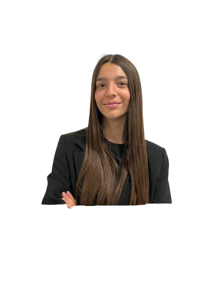

Hola,
soy Tiziana.
Social Media &
Community Manager
Cada marca tiene una voz. Mi trabajo es encontrarla y sostenerla en cada publicación.
Sobre mí
Soy Tiziana Tombel, estudiante avanzada de la carrera de Licenciatura en Publicidad en la Universidad Argentina de la Empresa, ubicada en La Plata, Buenos Aires. Me considero una persona creativa, observadora y comprometida con los detalles, con un gran interés por el mundo de las marcas, la comunicación digital y la industria de la moda.
Me interesa formar parte de marcas con identidad clara, propósito y que coincidan con mis valores. A largo plazo, busco desarrollarme en dirección creativa y construcción de universos de marca. Estoy abierta a oportunidades emocionantes.
LinkedInCursos y certificados
Explorá mi portfolio
Trabajemos juntos
Proyectos
Proyectos propios y trabajos de la facultad.
Quién soy
Soy community manager en Buenos Aires y estudio la Licenciatura en Publicidad en UADE. Me gusta que cada marca suene a sí misma, con ideas claras y resultados que se puedan medir.
Work and Travel
Alemania
Entre enero y marzo de 2026 tuve la oportunidad de participar en un programa de Work & Travel con destino Alemania, donde trabajé en Elmar Jung Product Solutions, una de las principales compañías de logística ubicada en Neunkirchen, Saar.
En esta experiencia no solo tuve la oportunidad de trabajar y conocer una cultura completamente distinta, sino también de desarrollar habilidades a nivel personal y profesional. Aprender a adaptarme a un nuevo entorno, comunicarme en otro idioma, resolver situaciones fuera de mi zona de confort y convivir con personas de diferentes partes del mundo fueron desafíos que me permitieron crecer, ganar independencia y ampliar mi perspectiva.
Fuera del trabajo, la experiencia fue increíble: hice amigos de todo el mundo, aprendí a comunicarme en situaciones donde el idioma común muchas veces era el alemán, y entendí lo que significa adaptarse rápido a culturas y formas de vivir diferentes a las mías. Esta etapa fortaleció mi manejo de idiomas y mi interés por seguir formándome en contextos internacionales.
Social Media
Manejo las redes de una marca de punta a punta: estrategia por red, plan de contenidos, copys, comunidad y reportes mensuales, siempre con la voz propia de cada cuenta.
Herramientas
Proceso Social Media
Defino el rol de cada red social según los objetivos de la marca: a quién le habla, qué dice y en qué formato.
Planifico cada mes con frecuencia, formatos y fechas clave para feed, stories y videos.
Escribo los textos de cada pieza cuidando el tono de la marca y el objetivo de la publicación.
Respondo mensajes y comentarios con la voz de la marca y desarrollo formatos con la comunidad.
Analizo los resultados de cada mes y cierro con conclusiones y próximos pasos.
Calendario de contenidos Oct